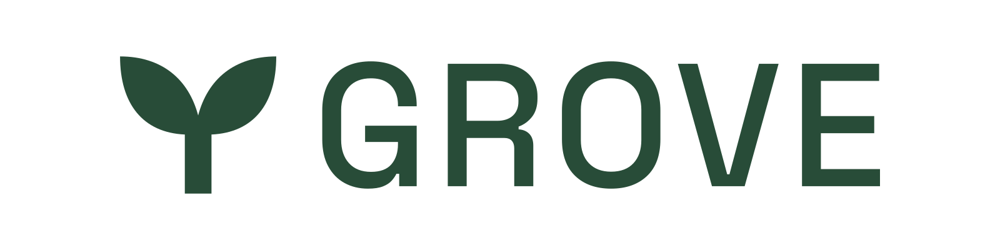
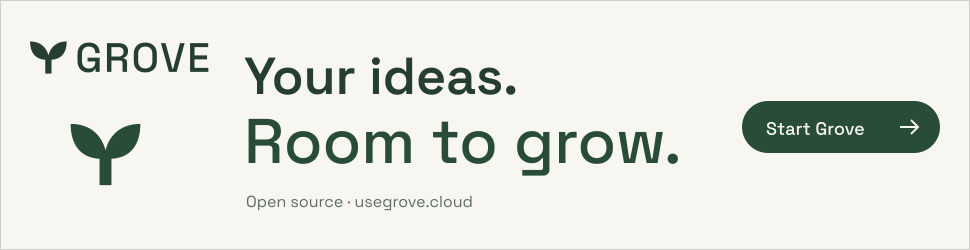

Visit GroveBRAMBLE FAMILY / COLLECTION 04 / DESIGN KIT
Good ideas. Room to grow.
Your private notebook for notes, journal entries and connected context. A little space for what matters.
Typography: Space Grotesk + JetBrains Mono. Keep the supplied signatures outlined. Use the web fonts for live text.
One considered palette.
#faf9f3
#284c38
#284c38
#c7df9e
#536358
#d8dfd1
#fffef9
The approved signature.



A shared rhythm. Your own voice.
Use an 8px spacing rhythm, 48px primary controls, generous paper backgrounds and a single clear next action. Keep body text at 4.5:1 contrast. Motion supports the story and respects reduced-motion preferences.
Ready for the next story.

Take what you need.


Approved assets from marketing collection 04. Source paths and checksums are in the repository design-kit/asset-manifest.json. Keep the files in licenses/ with redistributed fonts. Illustrative artwork is not a newly captured native screenshot.